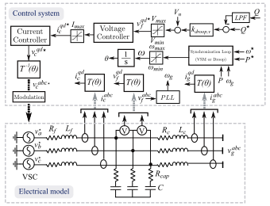
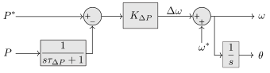
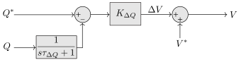
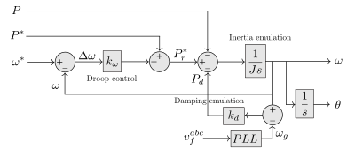
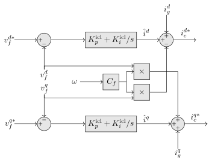
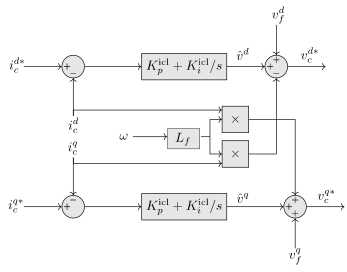

Generic EMT Grid Forming Voltage Source Converter
Context
Voltage Source Converters (VSC) are widely used in power systems for a variety of applications, such as wind and photovoltaic generation, High Voltage Direct Current (HVDC) transmission, and Flexible AC Transmission Systems (FACTS). The model described here is a detailed Electromagnetic Transient (EMT) model of a grid-forming VSC, which is a type of VSC that, compared to the Grid Following (which follows the grid rotation) are capable of imposing a determined angle and frequency. This model, obtained from the many works developed at CITCEA-UPC (Centre d’Innovació Tecnològica en Convertidors Estàtics i Accionaments) such as [1], is useful for studying the fast-dynamics of the VSC and its interaction with the grid.
Model use, assumptions, validity domain and limitations
The model use is to perform EMT studies involving Grid Forming VSCs. It is valid for the study of the fast dynamics of the VSC and its interaction with the grid. The model is based on the following assumptions:
- The system is balanced and sinusoidal.
- The VSC is represented by three equivalent voltage sources.
- Frequency and angle reference are obtained using a reference frequency and a synchronization loop, which can be a virtual synchronous machine or a droop control.
- The voltage setpoint is obtained from the reactive power droop control.
- The Voltage Controller provides a current reference from a voltage reference.
- The Current Controller provides the converter voltage.
- Calculations of power have been done following the instantaneous power theory [2].
The model is valid for high-frequency phenomena studies, such as short-circuit calculations, energization studies, switching transients, traveling waves or lightning events. Lower frequency studies can be performed, but since there is a limitation over the time-step size due to convergence issues (it has to be a couple of orders of magnitude smaller than the lowest time-constant of all the controllers), they are much slower than using a phasor-based model. The model is not valid for harmonic studies, since it does not consider the switching process, and the output voltage is considered to be sinusoidal.
Model description
The model can be described with the following schematic:

Figure 1: EMT Grid Forming VSC scheme [1]
It is important to note that the currents are measured both at the point of connection of the capacitor filter \(v_f\) and at the grid side \(v_g\), while the currents are measured before the filter at converter side \(i_c\) and after the filter at the grid side \(i_g\). Starred notation, such as \(v_c^{qd*}\), is used to denote setpoints, in this case the voltage for the equivalent sources of the converter.
The existence of modelling this type of filter (an LCL rather than the single L filter used in Grid Following) is due to the usage of a Grid Forming VSC, which can blackstart a network for example. The more complex filter is used to reduce the harmonic distortion of the output voltage and increase the robustness of the control, which is important in this type of application.
Clarke and Park transformations
Assuming a three-phase balanced system, the electrical variables can be expressed in the abc reference frame as:
\[ \begin{align} x_{abc} = \begin{bmatrix} x_a \\ x_b \\ x_c \end{bmatrix} = \begin{bmatrix} \sqrt{2} X \cos(\theta) \\ \sqrt{2}X \cos(\theta - \frac{2\pi}{3}) \\ \sqrt{2}X \cos(\theta + \frac{2\pi}{3}) \end{bmatrix} \end{align} \]
where \(X\) is the amplitude of the voltage or current, \(\theta\) is the angle of the voltage or current. The Clarke transformation [3] is used to convert the three-phase variables into an orthogonal reference frame. The transformation matrix is given by:
\[ T_{\text{Clarke}} = \frac{1}{3} \begin{bmatrix} 2 & -1 & -1 \\ 0 & \sqrt{3} & -\sqrt{3} \\ 1 & 1 & 1 \end{bmatrix} \]
which applied to the abc variables in balanced conditions, results in the \(\alpha\beta0\) variables:
\[ \begin{align} x_{\alpha\beta0} = T_{Clarke} x_{abc} = \begin{bmatrix} x_{\alpha} \\ x_{\beta} \\ x_0 \end{bmatrix} = \begin{bmatrix} \sqrt{2} X \cos(\theta) \\ - \sqrt{2}X \sin(\theta) \\ 0\end{bmatrix} \end{align} \]
noting that \(x_0 = 0\) since it is a balanced system. The electrical variables in this new reference are still sinusoidal. It is desirable to have constant valued variables to be able to implement typical PI control over the signal more easily. This is done using the Park transformation [4], converting the \(\alpha\beta\) variables into a rotating reference frame. The transformation matrix is given by:
\[ T_{\text{Park}}(\hat{\theta}) = \begin{bmatrix} \cos(\hat{\theta}) & -\sin(\hat{\theta}) \\ \sin(\hat{\theta}) & \cos(\hat{\theta}) \end{bmatrix} \]
which applied to the \(\alpha\beta\) variables, results in the \(dq0\) variables:
\[ \begin{align} x_{qd0} = \begin{bmatrix} x_{q} \\ x_{d} \end{bmatrix} = \begin{bmatrix} \sqrt{2} X \cos(\theta - \hat{\theta}) \\ \sqrt{2} X \sin(\theta - \hat{\theta}) \end{bmatrix} \end{align} \]
As it can be seen, the Park transformation is dependent of the angle \(\hat{\theta}\), which is the angle of the rotating reference frame, and it can be different to the angle of the voltage \(\theta\). If the electrical variable is synchronized with the rotating reference frame, then \(\theta = \hat{\theta}\) and \(x_d = 0\).
Synchronization loop
In this section, the two main synchronization loop methods for the Grid Forming VSC, the droop control method [5] and the Virtual Synchronous Machine [6] are presented. These controls determine the voltage magnitude and angle that the grid forming will use to operate. There are other alternatives [5], although the most studied are the ones presented in this model. The droop control method is simpler and it has been proven to be a special case of the virtual synchronous machine method [7], while the second one produces slower rates of change of the frequency due to the existence of virtual inertia in stand-alone situations.
Droop control
In the present model, the frequency of the VSC is determined using a synchronization loop that involves an active power droop. Considering a reference grid frequency \(\omega^*\) (normally 50 Hz), the converter frequency will be adjusted around this value considering the active power error, since active power and voltage phases are related in largely inductive grids as in the transmission system. The droop equation is given by:
\[ K_{\Delta P} = \frac{\Delta \omega}{\Delta P} \]
where the droop constant \(K_{\Delta P}\) is the slope of the droop curve, normally determined by grid codes in terms of the percentual variation of the frequency with respect to a variation of the active power. In addition to this droop control, it is common to apply a low-pass filter to the power measurement: \(\frac{1}{\tau_{\Delta P} s + 1}\), with \(\tau_{\Delta P} = \frac{1}{\omega_{\Delta P}}\) and \(\omega_{\Delta P}\) the bandwith of the filter. This avoids having higher harmonics in the frequency signal. The block diagram of the synchronization loop is shown in the following figure:

Figure 2: Synchronization Loop Diagram
Similar to the controls applied over the active power, the reactive power output of the converter is related to the voltage magnitude. In this case, the droop equation is given by:
\[ K_{\Delta Q} = \frac{\Delta Q}{\Delta V} \]
where the droop constant \(K_{\Delta Q}\) is the slope of the droop curve. Again, the reactive power measurement is filtered to avoid including high-frequency harmonics, applying a low-pass filter with a bandwidth \(\omega_{\Delta Q}\), and a time constant \(\tau_{\Delta Q} = \frac{1}{\omega_{\Delta Q}}\). The block diagram of the reactive power droop control is shown in the following figure:

Figure 3: Reactive Power Droop Diagram
Virtual Synchronous Machine (VSM)
Another alternative to the droop control is the Virtual Synchronous Machine (VSM) control [6], which is a control strategy that emulates the electromechanical behavior of a synchronous machine. This type of control emulates the swing equation of a synchronous machine:
\[ J \frac{d\omega}{dt} = P_r^* - P_e - P_d \]
where \(J\) is the inertia of the machine, \(\omega\) is the angular frequency of the machine, \(P_r^*\) is the virtual input power (which emulates the mechanical power), and \(P_e\) is the electrical power and \(P_d\) is the damping power of the virtual machine. The input power is calculated as the sum of the setpoint power and the droop power deviation \(P_r^* = P^* + k_{\omega}(\omega^*-\omega)\), the electrical power is the measure of the active power, and the damping power is obtained from simulating the damping using the relationship \(P_d = k_d (\omega - \omega_g)\), where \(\omega_g\) is the measure of the grid frequency, that has to be measured using a PLL, which can be the same as in the Grid Following model. The full control diagram is shown in the following figure:

Figure 4: VSM Synchronization Loop Diagram
As it can be seen, the leftmost part of the control corresponds to the droop control part of the synchronization loop, meaning that the droop control method can be related to a particular case of the VSM method. The reactive power control will be the same as in the droop control method.
Considering the qd0 reference frame in which \(v^{d*} = 0\), the voltage setpoint \(v^{q*}\) is equal to the module obtained from the reactive power droop control. The following section shows the voltage control droops applied to these references.
Voltage control
The voltage control is used to determine the current setpoints that will be used to control the converter. The tuning of this control has been done using the Internal Model Control method (IMC) [8], which provides PI controllers tuned in terms of the machine parameters (in this case \(C_f\)) with the desired response. Using Kirchhoff current law and neglecting the parasite resistance \(R_{cap}\) of the capacitors, the differential equations that model the relationship between voltage and currents in the Grid Forming VSC are the following:
\[ i^{qd*}_c - i^{qd}_g = \begin{bmatrix} 0 & -\omega C_f \\ \omega{C_f} & 0 \end{bmatrix} v^{qd}_f + \frac{d}{dt} \begin{bmatrix} v^d_f \\ v^q_f\end{bmatrix} \]
where \(C_f\) are the capacitance of the filter, \(i^{qd*}_c\) are the current setpoints at the converter side, \(i^{qd}_g\) are the current measurements at the grid side after the capacitor, and \(v^{qd}_f\) are the voltages measured at the filter. A change of variables that considers the coupling can be used to simplify the expressions, as well as using the Laplace transformation:
\[ \begin{bmatrix} \hat{i^d} \\ \hat{i^q} \end{bmatrix} = \begin{bmatrix} i^d_c - i^d_g + \omega C_f v^q_f \\ i^q_c - i^q_g - \omega C_f v^d_f \end{bmatrix} = \begin{bmatrix} sC_f v^d_f \\ sC_f v^q_f\end{bmatrix} \]
With the following block diagram representing the above relationship, and including a PI controller, forming the open-loop block diagram:

Figure 5: Voltage Control Diagram
From the previous section, the setpoints are decided to be \(v^{q*}_f = V\) and \(v^{d*}_f = 0\). To close the loop, the following plant is proposed which relates the decoupling current variables with the voltages:
\[ \begin{align} \frac{v^d_f}{\hat{i^d}} &= \frac{1}{sC_f} \\ \frac{v^q_f}{\hat{i^q}} &= \frac{1}{sC_f} \end{align} \]
with the following block diagram:
Figure 6: Voltage Closed-Loop Diagram
The closed-loop transfer function of the voltage control can be obtained by adding a PI controller to the open-loop transfer function. The PI controller is designed to have a second-order response, with the following transfer function:
\[ \frac{v^{qd}_f}{v^{qd*}} = \frac{sK^{vcl}_p + K^{vcl}_i}{s^2 C_f +sK^{vcl}_p + K^{vcl}_i} \]
The tuning of the control parameters will be so that the denominator adopts the form \(s^2 + 2\xi \omega_n C_f s + \omega_n^2\). With this, the values are:
\[ \begin{align} K^{vcl}_p &= 2\xi \omega_n C_f \\ K^{vcl}_i &= \omega_n^2 C_f \end{align} \]
with a damping factor \(\xi\) often between 0.5 and 1 (\(\frac{\sqrt{2}}{2}\) is a common value) and a natural frequency \(\omega_n\).
Over these current setpoints, a current control equivalent to the one from the grid-following can be applied.
Current control
The current control is used to determine the converter voltage that has to be applied in order to maintain the current at the setpoint. The tuning uses again the Internal Model Control method (IMC), described in [8] as in the Grid Following model. The control is based on the electric relationship between the variables:
\[ v_c^{abc*} - v_{f}^{abc} = R_f i_c^{abc} + L_f \frac{d}{dt} i_c^{abc} \]
which can be transformed into the qd frame to obtain the following equation:
\[ v_c^{qd*} - v_{f}^{qd} =\begin{bmatrix} R_f & L_f \omega\\ -L_f \omega & R_f \end{bmatrix} i_c^{qd} + L_f \frac{d}{dt} i_c^{qd} \]
where \(\omega\) is the angular frequency of the grid obtained in the synchronization loop, and \(v^{d*} = 0\). The block diagram associated to this system is the following:

Figure 7: Current Control Diagram
As it can be seen, there is a coupling between the q and d components. This can be dealt by the controller by designing a two dimension controller, or by decoupling the components and independently controlling each component. The later approach is the chosen in this model, using the following expression:
\[ \begin{bmatrix} \hat{v}^{q} \\ \hat{v}^{d} \end{bmatrix} = \begin{bmatrix} v^{q*} - v_f^{q} + L_f \omega i^d_c \\ v^{d*} - L_f \omega i^q_c \end{bmatrix} \]
where \(\hat{v}^{q}\) and \(\hat{v}^{d}\) are the controller output voltages. The equations are now decoupled using the expression:
\[ \begin{bmatrix} \hat{v}^{q} \\ v^{d} \end{bmatrix} = \begin{bmatrix} R_f & 0\\ 0 & R_f \end{bmatrix} \begin{bmatrix} i^q_c \\ i^d_c \end{bmatrix} + L_f \frac{d}{dt} \begin{bmatrix} i^q_c \\ i^d_c \end{bmatrix} \]
Applying the Laplace transformation and reordering, the following relation holds:
\[ \frac{i^{qd*}_c(s)}{\hat{v}^{qd}(s)} = \frac{1}{R_f + sL_f} \]
The closed-loop transfer function, considering \(G_c = K^{icl}_p + \frac{K^{icl}_i}{s}\) is:
\[ \frac{i^{qd}_s(s)}{i^{qd*}_s(s)} = \frac{G_c(s)}{(L_f + L_c)s + (R_f + R_c) + G_c(s)} \]
where \(i^{qd*}_c(s)\) is the reference current for q or d axis at the converter side, and \(i^{qd}_c(s)\) is the measured current. The controller gains can be selected as \(K^{icl}_p = \frac{L_f}{\tau_c}\) and \(K^{icl}_i = \frac{R_f}{\tau_c}\), where \(\tau_c\) is the time constant of the current loop, such that the complete closed-loop transfer function is represented as the following first-order response:
\[ \frac{i^{qd}_c(s)}{i^{qd*}_c(s)} = \frac{1}{\tau_c s + 1} \]
The resulting PI controller is the following:
\[ G_{c}(s) = K_p + \frac{K_i}{s} = \frac{L_f}{\tau_c} + \frac{R_f}{\tau_c s} \]
Limitations of current
The technical constraints of the VSC can be included in the controls using saturation blocks. In section 3.5 of the EMT Grid Following Model, there is an example of implementation of the anti-windup controls for the transformer.
Modulation
As in the EMT Grid Following Model, the converter voltage setpoint obtained can be considered directly the converter voltage, in what is called an Averaged Model, since it does not consider the switching process. However, a more complete EMT simulation will model the modulation performed to obtain the sinusoidal voltage from the DC source. The details can be consulted in Section 3.6 of the said model.
Parameter tuning
The following table shows possible values for the parameters of the controllers using the tuning proposed:
Static data for the lines
| Line/Cable | Nominal Voltage (kV) | \(R\) (\(\Omega\)) | \(L\) (\(H\)) |
|---|---|---|---|
| Converter - grid filter (grid connection) | \(2.45\) kV | \(0.0326\) | \(0.001038\) |
| Converter - capacitor (GFM) | \(2.45\) kV | \(0.0048913\) | \(0.00031139\) |
Control parameters
| Parameter | Value | Units |
|---|---|---|
| \(C\) | \(1.63 \cdot 10^{-4}\) | \(F\) |
| \(\omega_n^{PLL}\) | \(2\pi 1000\) | \(rad/s\) |
| \(\zeta^{PLL}\) | \(0.707\) | \(-\) |
| \(K^{PLL}_p\) | \(3.55\) | \(-\) |
| \(K^{PLL}_i\) | \(1.58 \cdot 10^4\) | \(-\) |
| \(\tau^{PLL}\) | \(0.225\) | \(ms\) |
| \(\tau^c\) | \(1\) | \(ms\) |
| \(K^{icl}_p\) | \(0.13494\) | \(-\) |
| \(K^{icl}_i\) | \(100\) | \(-\) |
| \(K^{vcl}_p\) | \(5\) | \(-\) |
| \(K^{vcl}_i\) | \(500\) | \(-\) |
| \(K^{Droop}_p\) | \(2\pi 50\) | \(-\) |
Open source implementations
This model has been successfully implemented in :
| Software | URL | Language | Open-Source License | Last consulted date | Comments |
|---|---|---|---|---|---|
| PSTess | Link | MATLAB | Copyright 2021 National Technology & Engineering Solutions of Sandia, LLC (NTESS) | 09/07/2024 | Droop control version, equivalent to REGFM_A1 from WECC accepted dynamic models |
Table of references
[1] Lacerda, V. A.; Prieto-Araujo, E.; Cheah, M.; Gomis-Bellmunt, O. “Phasor and EMT models of grid-following and grid-forming converters for short-circuit simulations.”, October 2023, vol. 223, núm. 109662. DOI: 10.1016/j.epsr.2023.109662
[2] Akagi, H., Watanabe, E., Aredes, M.: “Instantaneous power theory and Applications to power conditioning”. Wiley, Chichester (2007)
[3] Clarke, E., “Circuit Analysis Of A-c Power System Vol I”, John Wiley and Sons, 1941
[4] Park, R. H., “Two-reaction theory of synchronous machines generalized method of analysis-part I”, AIEE Transactions, Vol. 48, Issue 3, July 1929. DOI: 10.1109/T-AIEE.1929.5055275
[5] Rathnayake, D. B., et al. “Grid forming inverter modeling, control, and applications.” IEEE Access, 9, 114781-114807 (2021).
[6] D’Arco, S.; Suul, J.A.; Fosso, O.B. “A Virtual Synchronous Machine implementation for distributed control of power converters in SmartGrids”, Electric Power Systems Research, Volume 122, 2015, Pages 180-197, DOI: 10.1016/j.epsr.2015.01.001
[7] S. D’Arco and J. A. Suul, “Equivalence of Virtual Synchronous Machines and Frequency-Droops for Converter-Based MicroGrids,” in IEEE Transactions on Smart Grid, vol. 5, no. 1, pp. 394-395, Jan. 2014, DOI: 10.1109/TSG.2013.2288000
[8] Harnefors, L.; Nee, H. P. “Model-Based Current Control of AC Machines Using the Internal Model Control Method”. IEEE Transactions on Industrial Applications, Vol. 34, No. 1, January/February 1998, DOI: 10.1109/28.658735